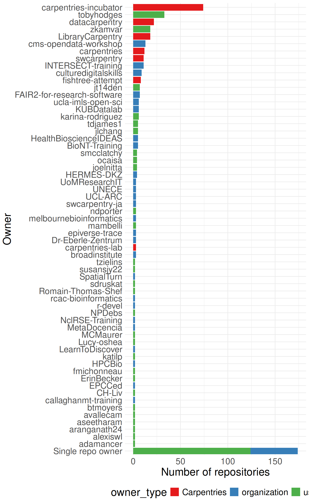
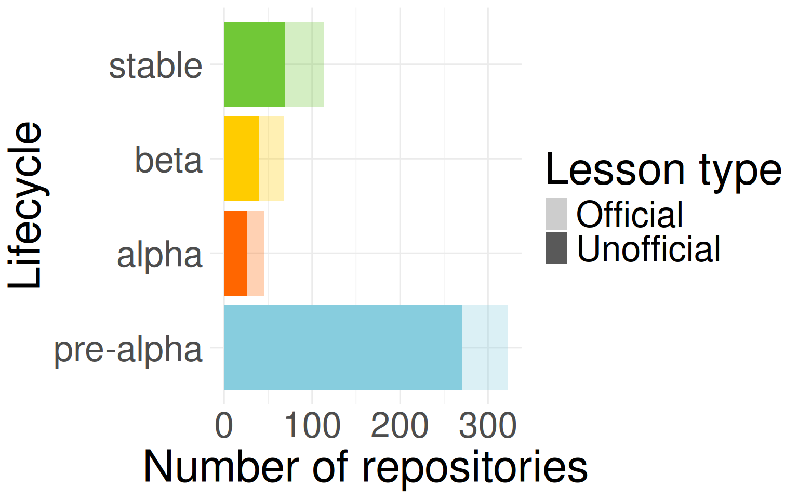
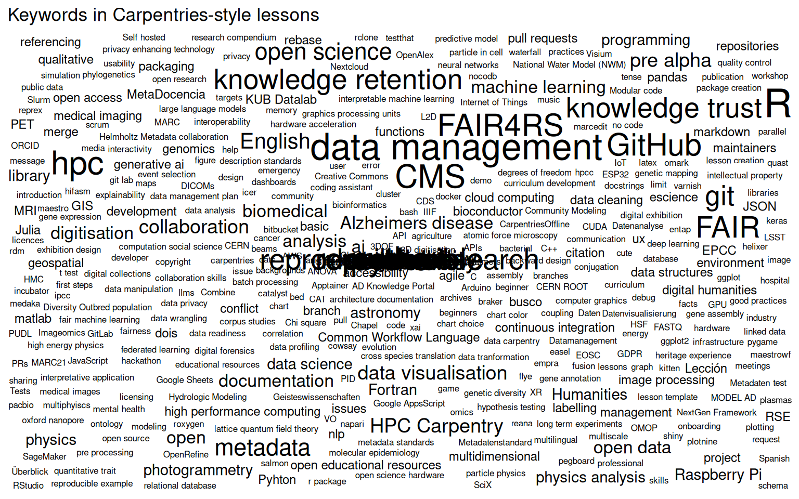
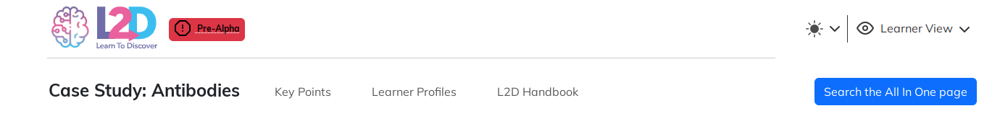
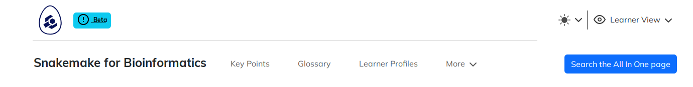
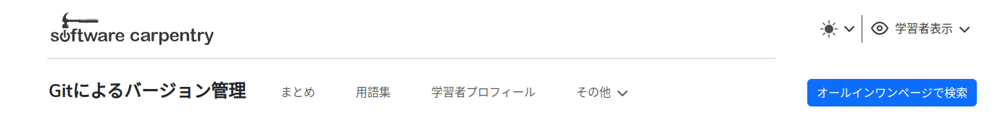

Number of repositories
299
Number of owners
102


repo lang
1 Python-pandas-compact de
2 lc-computational-thinking en
3 lc-data-intro en
4 lc-data-intro-archives en
5 lc-dmp101 en
6 lc-git en
7 lc-marcedit en
8 lc-open-refine en
9 lc-overview en
10 lc-python-intro en
11 lc-r en
12 lc-shell en
13 lc-spreadsheets en
14 lc-sql en
15 lc-wikidata en
16 git-novice en
17 python-novice-gdp-penguins en
18 ModernStats_Git en
19 ModernStats_Python en
20 ModernStats_R en
21 2024-06-24-python-novice-lesson en
22 2024-09-27-python-intro-lesson en
23 instructor-training en
24 instructor-training-bonus-modules en
25 SDC-BIDS-EEG-EEGLAB en
26 SDC-BIDS-IntroMRI en
27 SDC-BIDS-dMRI en
28 SDC-BIDS-fMRI en
29 SDC-BIDS-sMRI en
30 docker-introduction en
31 julia-novice en
32 python-humanities-lesson en
33 singularity-introduction en
34 snakemake-novice-bioinformatics en
35 good-enough-practices en
36 2024-360-digitisation en
37 OpenRefine-ecology-lesson en
38 R-ecology-lesson en
39 astronomy-python en
40 cloud-genomics en
41 ecology-workshop en
42 genomics-r-intro en
43 genomics-workshop en
44 geospatial-workshop en
45 image-processing en
46 openrefine-socialsci en
47 organization-genomics en
48 organization-geospatial en
49 python-ecology-lesson en
50 python-ecology-lesson-es es
51 python-socialsci en
52 r-intro-geospatial en
53 shell-genomics en
54 socialsci-workshop en
55 spreadsheet-ecology-lesson en
56 spreadsheets-socialsci en
57 sql-ecology-lesson en
58 sql-socialsci en
59 wrangling-genomics en
60 epimodelac es
61 epitkit es
62 shell-novice en
63 git-novice-ja-test en
64 cb-python-intro-lesson-template en
65 git-novice-uk en
66 shell-novice-de de
67 shell-novice-es es
68 git-novice en
69 git-novice-es es
70 make-novice en
71 matlab-novice-inflammation en
72 python-novice-gapminder en
73 python-novice-inflammation en
74 r-novice-gapminder en
75 r-novice-gapminder-es es
76 r-novice-inflammation en
77 shell-novice en
78 shell-novice-es es
79 sql-novice-survey en
80 automatic-funicular en
81 docker-intro-transition-test en
82 metagenomics-workshop-workbench en
83 probable-pancake en
84 sturdy-enigma en
85 upgraded-adventure en

0.0.0.9060 0.0.0.9065 0.0.0.9067 0.0.0.9068 0.0.0.9069
1 1 1 1 2
0.0.0.9070 0.0.0.9072 0.1.0 0.3.5 0.5.1
1 1 2 1 3
0.5.2 0.5.7 0.8.0 0.9.0 0.9.3
1 4 2 1 6
0.9.4 0.10.4 0.10.7 0.10.8 0.11.3
3 1 1 6 5
0.11.5 0.11.10 0.11.12 0.11.13 0.11.15
1 1 15 3 5
0.12.0 0.12.3 0.12.4 0.13.0 0.13.1
3 1 5 10 1
0.13.3 0.14.0 0.14.1 0.14.1.9000 0.15.0
20 9 1 2 1
0.15.0.9000 0.16.1 0.16.2 0.16.4 0.16.5
1 2 8 5 24
0.16.5.9000 0.16.5.90000.1 0.16.6 0.16.7 0.16.8
1 1 15 31 7
0.16.9
73 Rmd vs md template
69%
custom.varnish custom.sandpaper custom.pegboard
41 16 1 








